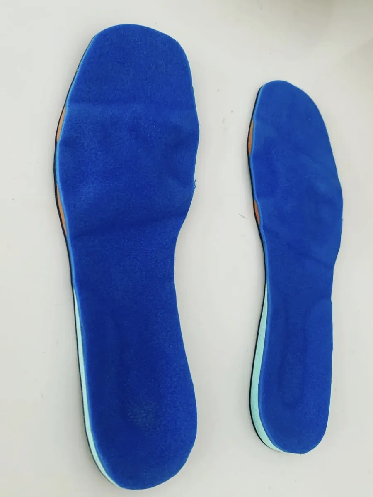

No tengo receta
Hago la evaluación completa en tu domicilio y diseño las plantillas a partir de lo que encuentro. Atiendo en San Bernardo, La Florida, Talagante y Padre Hurtado.
Una plantilla prefabricada te da amortiguación pareja. Una hecha a medida se confecciona para tus pies y descarga justo la zona que te duele. Esa es toda la diferencia.

Así es cuando voy a tu casa a evaluarte.
Me cuentas qué te duele, desde cuándo y qué haces en el día.
Con podoscopio y examen biomecánico veo cómo repartes el peso estando de pie y qué hace tu pie al caminar. No es lo mismo un arco que se hunde al apoyar que uno que nunca baja.
De los dos pies, por separado.
A mano, con las descargas y los soportes que pide tu caso concreto.
Y empiezas a usarlas. Si algo te incomoda cuando ya las estés usando, escríbeme y vemos cómo ajustarlo.
Las plantillas complementan la indicación de tu médico o kinesiólogo; no reemplazan una consulta. Si nunca consultaste por tu dolor, conversémoslo: a veces lo primero es ver a un profesional y después las plantillas.
Hago la evaluación completa en tu domicilio y diseño las plantillas a partir de lo que encuentro. Atiendo en San Bernardo, La Florida, Talagante y Padre Hurtado.
Me envías la foto de tu receta por WhatsApp y confecciono según lo que indicó tu profesional. Envíos a todo Chile.
En los dos casos te cotizo por WhatsApp antes de empezar.
Al principio se notan, y es esperable: le estás cambiando a tu pie la forma en que reparte el peso. Cuando te las entregue te explico cómo empezar a usarlas. Si algo te incomoda cuando ya las estés usando, escríbeme y vemos cómo ajustarlo.
Depende de la modalidad y de lo que necesite tu caso. Te cotizo por WhatsApp antes de empezar, así que sabes el valor antes de que confeccione nada.
No para todos. Conviene que el calzado tenga la plantilla original removible y algo de profundidad, porque la que hago ocupa su lugar. Un zapato muy plano o muy justo deja poco espacio. Cuéntame qué usas a diario y lo tomo en cuenta al confeccionarlas.
Depende de cuánto cambien entre sí tus zapatos. Si usas zapatilla deportiva para entrenar y zapato de trabajo ocho horas, no es lo mismo: lo conversamos y vemos qué te conviene.
Una plantilla no cambia la forma de un hueso. Lo que hace es sostener, descargar y ordenar el apoyo mientras la usas, y eso permite que el tejido que está irritado deje de recibir el golpe que lo irrita. En un pie en crecimiento la historia es distinta y ahí manda el médico tratante.
Cuéntame qué sientes y desde cuándo, y vemos si unas plantillas a medida son lo que necesitas.